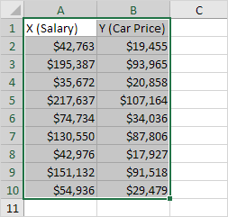
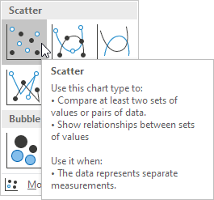
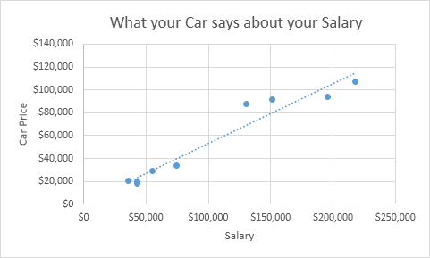
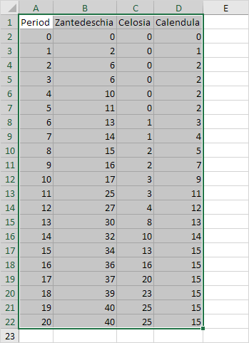
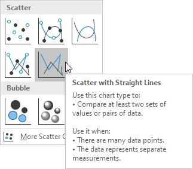
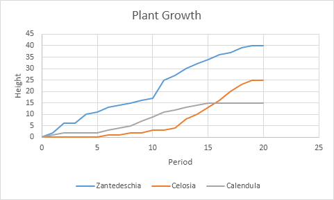

Scatter Plot
Use a scatter plot (XY chart) to show scientific XY data. Scatter plots are often used to find out if there's a relationship between variable X and Y.
Only Markers
To find out if there is a relationship between X (a person's salary) and Y (his/her car price), execute the following steps.
1. Select the range A1:B10.

2. On the Insert tab, in the Charts group, click the Scatter symbol.

3. Click Scatter.

Result:

Note: we added a trendline to clearly see the relationship between these two variables.
Straight Lines
To create a scatter plot with straight lines, execute the following steps.
1. Select the range A1:D22.

2. On the Insert tab, in the Charts group, click the Scatter symbol.
3. Click Scatter with Straight Lines.

Note: also see the subtype Scatter with Smooth Lines.
Result:

Note: we added a horizontal and vertical axis title. The horizontal axis of a scatter plot is a value axis, so you have more axis scaling options (the same as a vertical axis which always is a value axis).